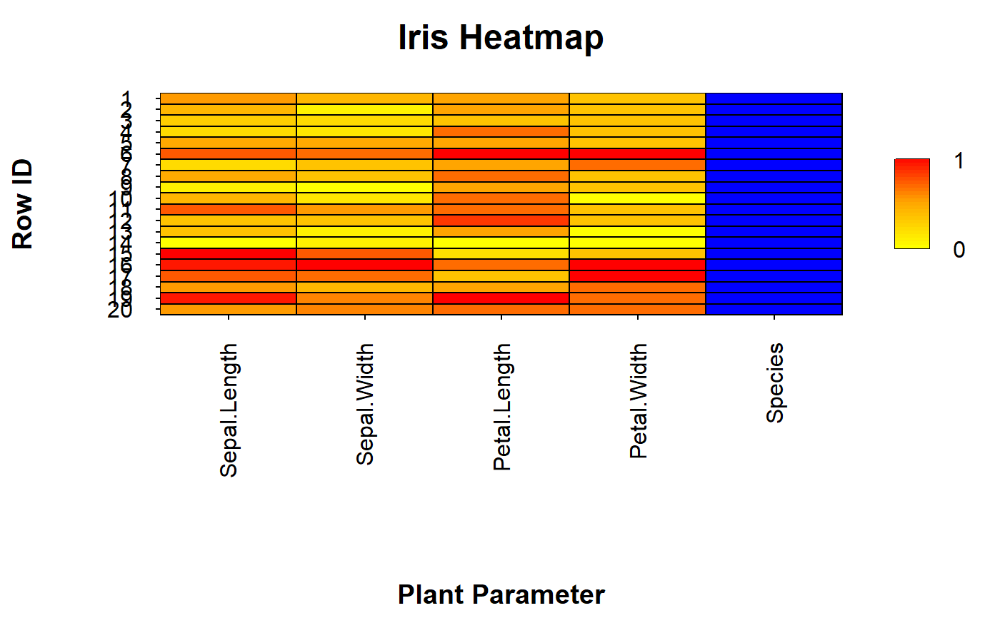

heat_map() provides an intuitive way to construct high resolution
heatmaps with minimal coding and data preparation. heat_map() has
support for non-numeric data, data scaling, clustering and dendrograms.
heat_map( x, scale = FALSE, dist_method = "euclidean", clust_method = "complete", transpose = FALSE, round = 2, cluster = FALSE, reorder = TRUE, dendrogram = FALSE, dendrogram_size = 0.2, dendrogram_scale = FALSE, margins = NULL, axis_text_x = NULL, axis_text_x_side = "bottom", axis_text_x_font = 1, axis_text_x_size = 1, axis_text_x_col = "black", axis_text_x_col_alpha = 1, axis_text_x_angle = 3, axis_text_x_adjust = 0.45, axis_label_x = NULL, axis_label_x_font = 2, axis_label_x_size = 1.2, axis_label_x_col = "black", axis_label_x_col_alpha = 1, axis_ticks_x_length = -0.02, axis_text_y = NULL, axis_text_y_side = "left", axis_text_y_font = 1, axis_text_y_size = 1, axis_text_y_col = "black", axis_text_y_col_alpha = 1, axis_text_y_angle = 1, axis_text_y_adjust = 0.45, axis_label_y = NULL, axis_label_y_font = 2, axis_label_y_size = 1.2, axis_label_y_col = "black", axis_label_y_col_alpha = 1, axis_ticks_y_length = -0.02, title = NULL, title_side = 3, title_text_font = 2, title_text_size = 1.5, title_text_col = "black", title_text_col_alpha = 1, box_col_palette = c("blue", "turquoise", "green", "yellow", "orange", "red", "darkred"), box_col_scale = c("red", "black", "green"), box_col_alpha = 1, box_col_empty = "white", box_border_line_type = 1, box_border_line_width = 1, box_border_line_col = "black", box_border_line_col_alpha = 1, box_text = FALSE, box_text_font = 1, box_text_size = 1, box_text_col = "white", box_text_col_alpha = 1, legend = TRUE, legend_side = 4, legend_col_breaks = 25, legend_text_breaks = NULL, legend_text_font = 1, legend_text_size = 1, legend_text_col = "black", legend_text_col_alpha = 1, legend_box_width = 0.05, legend_box_height = 0.4, ... )
Arguments
| x | matrix or matrix-like object containing the data to generate the heatmap. The supplied data may contain non-numeric columns which will be included in the constructed heatmap, but will not be scaled or used for hierarchical clustering. |
|---|---|
| scale | indicates whether column-wise scaling should be applied to the
data prior to constructiong the heatmap (TRUE OR FALSE) or indicates the
method to use when performing column-wise scaling, options include
|
| dist_method | name of the method to use when computing distance matrices
using |
| clust_method | name of the method to use for heirarchical clustering
using |
| transpose | logical indicating whether to transpose the rows and columns when constructing the heatmap, set to FALSE by default. |
| round | number of decimal places to round numeric values in the constructed heatmap, set to 2 by default. |
| cluster | indicates whether clustering should be performed (TRUE or
FALSE) or specifies whether clustering should be performed on either the
|
| reorder | logical indicating whether columns should be reordered post clustering to align columns or rows based on relatedness, set to TRUE by default. Columns and rows must be reordered if dendrograms are added. |
| dendrogram | logcial indicating whether dendrograms should be added to
the constrcted heatmap (TRUE OR FALSE) or indicates whether dendrograms
should be included for the |
| dendrogram_size | numeric indicating the width of the dendrogram as a percentage of the total rows or columns, set to 0.2 by default. |
| dendrogram_scale | logical indicating whether dendrogram heights should be scaled to be the same size for better visualization, set to FALSE by default. |
| margins | a vector of length 4 indicating the number of lines to add to
the plot margins, set to NULL by default to let |
| axis_text_x | vector of text to label each column in the supplied data,
set to the |
| axis_text_x_side | indicates which of side of the plot to label the columns of the heatmap (bottom = 1 or top = 3), set to 1 by default to add column labels below the plot. |
| axis_text_x_font | numeric indicating the font to use for the column
labels, set to 1 by default for plain font. See
|
| axis_text_x_size | numeric to control the size of the column labels, set to 1 by default. |
| axis_text_x_col | vector of colours to use for column labels, set to
|
| axis_text_x_col_alpha | numeric to control the alpha transparency of the column label text, set to 1 by default to remove transparency. |
| axis_text_x_angle | indicates whether the column label text should be
horizontal or vertical, set to 3 by default to always be perpendicular to
the axis. See |
| axis_text_x_adjust | horizontal adjustment of x axis text, set to 0.45 by default. |
| axis_label_x | label for x axis, set to NULL by default. |
| axis_label_x_font | numeric indicating the font to use for the x axis
label, set to 2 by default for bold font. See
|
| axis_label_x_size | numeric to control the size of x axis label, set to 1 by default. |
| axis_label_x_col | colour to use for x axis label, set to |
| axis_label_x_col_alpha | numeric to control the alpha transparency of the x axis label, set to 1 by default to remove transparency. |
| axis_ticks_x_length | numeric to control the length of the x axis ticks,
set to -0.02 by default. See |
| axis_text_y | vector of text to label each row in the supplied data, set
to the |
| axis_text_y_side | indicates which of side of the plot to label the rows of the heatmap (left = 2 or right = 4), set to 1 by default to add row labels below the plot. |
| axis_text_y_font | numeric indicating the font to use for the row
labels, set to 1 by default for plain font. See
|
| axis_text_y_size | numeric to control the size of the row labels, set to 1 by default. |
| axis_text_y_col | vector of colours to use for row labels, set to
|
| axis_text_y_col_alpha | numeric to control the alpha transparency of the row label text, set to 1 by default to remove transparency. |
| axis_text_y_angle | indicates whether the row label text should be
horizontal or vertical, set to 3 by default to always be perpendicular to
the axis. See |
| axis_text_y_adjust | vertical adjustment of y axis text, set to 0.45 by default. |
| axis_label_y | label for y axis, set to NULL by default. |
| axis_label_y_font | numeric indicating the font to use for the y axis
label, set to 2 by default for bold font. See
|
| axis_label_y_size | numeric to control the size of y axis label, set to 1 by default. |
| axis_label_y_col | colour to use for y axis label, set to |
| axis_label_y_col_alpha | numeric to control the alpha transparency of the y axis label, set to 1 by default to remove transparency. |
| axis_ticks_y_length | numeric to control the length of the y axis ticks,
set to -0.02 by default. See |
| title | text to include in the plot title, set to NULL by default. |
| title_side | indicates to which side of the plot the title should be added (bottom = 1, left = 2, top = 3 or right = 4), set to 3 by default. |
| title_text_font | numeric indicating the font to use for the plot title,
set to 2 by default for bold font. See |
| title_text_size | numeric to control the size of the plot title, set to 1.5 by default. |
| title_text_col | colour to use for yplot title, set to |
| title_text_col_alpha | numeric to control the alpha transparency of the plot title, set to 1 by default to remove transparency. |
| box_col_palette | vector of colours to select from when colouring non-numeric columns, set to a blue to red colour palette by default. |
| box_col_scale | vector of colours to use for the colour scale for numeric columns, set to a red-black-green colour scale by default. |
| box_col_alpha | numeric to control the alpha transparency of the box colours, set to 1 by default to remove transparency. |
| box_col_empty | colour to use for missing values, set to "white" by default. |
| box_border_line_type | numeric to control the line type of the box
borders, set to 1 to use solid lines by default. See
|
| box_border_line_width | numeric to control the line thickness of the box borders, set to 1 by default. |
| box_border_line_col | colour to use for box borders, set to
|
| box_border_line_col_alpha | numeric to control the alpha transparency of the box borders, set to 1 by default to remove transparency. |
| box_text | logical indicating whether to display the values in the
heatmap, set to FALSE by default. Can be set to |
| box_text_font | numeric indicating the font to use for the box text, set
to 1 by default for plain font. See |
| box_text_size | numeric to control the size of the box text, set to 1 by default. |
| box_text_col | colour to use for the box text, set to |
| box_text_col_alpha | numeric to control the alpha transparency of the box text, set to 1 by default to remove transparency. |
| legend | logical indicating whether to include a legend for numeric colour scale, set to TRUE by default. Legends for non-numeric columns are not currently supported. |
| legend_side | indicates to which side of the plot the legend should be added (bottom = 1, left = 2, top = 3 or right = 4), set to 4 by default. |
| legend_col_breaks | indicates the number of colour breaks to include in the legend, set to 25 by default. |
| legend_text_breaks | a vector of indices indicating which colour breaks should be labelled with text, set to label the first and last colour breaks by default. Note that the top break is equal to the number of legend colour |
| legend_text_font | numeric indicating the font to use for the legend
text, set to 1 by default for bold font. See
|
| legend_text_size | numeric to control the size of the legend text, set to 1.5 by default. |
| legend_text_col | colour to use for the legend text, set to
|
| legend_text_col_alpha | numeric to control the alpha transparency of the legend text, set to 1 by default to remove transparency. |
| legend_box_width | numeric to control the width of the legend as a percentage of the plot area width, set to 0.05 by default. |
| legend_box_height | numeric to control the width of the legend as a percentage of the plot area height, set to 0.4 by default. |
| ... | not in use. |
Examples
# Heatmap - Raw Values heat_map(iris[1:20, ], title = "Iris Heatmap", axis_label_x = "Plant Parameter", axis_label_y = "Row ID" )# Heatmap - Scaled heat_map(iris[1:20, ], scale = "range", title = "Iris Heatmap", axis_label_x = "Plant Parameter", axis_label_y = "Row ID", box_col_scale = c("yellow", "orange", "red") )#>